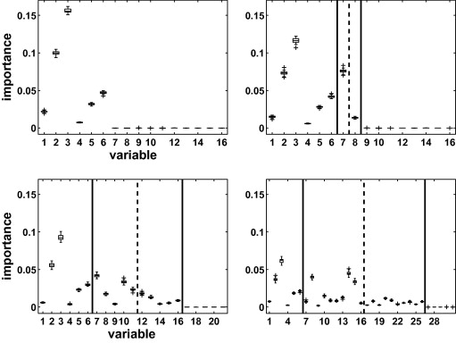

Variable selection using random forests
Abstract
This paper proposes, focusing on random forests, the increasingly used statistical method for classification and regression problems introduced by Leo Breiman in 2001, to investigate two classical issues of variable selection. The first one is to find important variables for interpretation and the second one is more restrictive and try to design a good parsimonious prediction model. The main contribution is twofold: to provide some experimental insights about the behavior of the variable importance index based on random forests and to propose a strategy involving a ranking of explanatory variables using the random forests score of importance and a stepwise ascending variable introduction strategy.
Keywords
- Random forests;
- Regression;
- Classification;
- Variable importance;
- Variable selection;
- High dimensional data
1. Introduction
This paper is primarily interested in random forests for variable selection. Mainly methodological the main contribution is twofold: to provide some experimental insights about the behavior of the variable importance index based on random forests and to use it to propose a two-steps algorithm for two classical problems of variable selection starting from variable importance ranking. The first problem is to find important variables for interpretation and the second one is more restrictive and try to design a good parsimonious prediction model. The general strategy involves a ranking of explanatory variables using the random forests score of importance and a stepwise ascending variable introduction strategy. Let us mention that we propose an heuristic strategy which does not depend on specific model hypotheses but based on data-driven thresholds to take decisions.
Before entering into details, we introduce the three main topics of this paper (random forests, variable importance, variable selection) and we sketch a typical high dimensional classification problem motivating this work.
1.1. Random forests
Random forests (RF henceforth) is a popular and very efficient algorithm, based on model aggregation ideas, for both classification and regression problems, introduced by Breiman (2001). It belongs to the family of ensemble methods, appearing in machine learning at the end of nineties (see for example Dietterich, 2000a and Dietterich, 2000b). Let us briefly recall the statistical framework by considering a learning set L={(X1,Y1),…,(Xn,Yn)} made of n i.i.d. observations of a random vector (X,Y). Vector X=(X1,…,Xp) contains predictors or explanatory variables, say X∈Rp, and Y∈Y where Y is either a class label or a numerical response. For classification problems, a classifier t is a mapping t:Rp→Y while for regression problems, we suppose that Y=s(X)+ε with E[ε|X]=0 and s the so-called regression function (for more background on statistical learning, see e.g. Hastie et al. (2001)). Random forests is a model building strategy providing estimators of either the Bayes classifier, which is the mapping minimizing the classification error  , or the regression function.
, or the regression function.
The principle of random forests is to combine many binary decision trees built using several bootstrap samples coming from the learning sample L and choosing randomly at each node a subset of explanatory variables X. More precisely, with respect to the well-known CART1 model building strategy (see Breiman et al. (1984)) performing a growing step followed by a pruning one, two differences can be noted. First, at each node, a given number (denoted by mtry) of input variables are randomly chosen and the best split is calculated only within this subset. Second, no pruning step is performed so all the trees of the forest are maximal trees.
In addition to CART, bagging, another well-known related tree-based method, is to be mentioned (see Breiman (1996)). Indeed random forests with mtry=p reduce simply to unpruned bagging. The associated R packages2 are respectively randomForest (intensively used in the sequel of the paper), rpart and ipred for CART and bagging respectively (cited here for the sake of completeness).
RF algorithm becomes more and more popular and appears to be very powerful in a lot of different applications (see for example Díaz-Uriarte and Alvarez de Andrés (2006) for gene expression data analysis) even if it is not clearly elucidated from a mathematical point of view (see the recent paper by Biau et al. (2008) about purely random forests and Bühlmann and Yu (2002) about bagging). Nevertheless, Breiman (2001) sketches an explanation of the good performance of random forests related to the good quality of each tree (at least from the bias point of view) together with the small correlation among the trees of the forest, where the correlation between trees is defined as the ordinary correlation of predictions on so-called out-of-bag (OOB henceforth) samples. The OOB sample is the set of observations which are not used for building the current tree. It is used to estimate the prediction error and then to evaluate variable importance.
The R package about random forests is based on the seminal contribution of Breiman and Cutler (2005) and is described in Liaw and Wiener (2002). In this paper, we focus on the randomForest procedure. The two main parameters are mtry, the number of input variables randomly chosen at each split and ntree, the number of trees in the forest. Some details about numerical and sensitivity experiments can be found in Genuer et al. (2008).
In addition, we will concentrate on the prediction performance of RF focusing on out-of-bag (OOB) error (see Breiman (2001)). We use this kind of prediction error estimate for three reasons: the main is that we are mainly interested in comparing models instead of assessing models, the second is that it gives fair estimation compared to the usual alternative test set error even if it is considered as a little bit optimistic and the last one, is that it is a default output of the randomForest procedure, so it is used by almost all users.
1.2. Variable importance
The quantification of the variable importance (VI henceforth) is an important issue in many applied problems complementing variable selection by interpretation issues.
In the random forests framework, the most widely used score of importance of a given variable is the increasing in mean of the error of a tree (mean square error (MSE) for regression and misclassification rate for classification) in the forest when the observed values of this variable are randomly permuted in the OOB samples (it could be slightly negative). Often, such random forests VI is called permutation importance indices in opposition to total decrease of node impurity measures already introduced in the seminal book about CART by Breiman et al. (1984).
For regression problems, two other measures of VI are to be mentioned. In the linear regression framework it is examined for example by Grömping (2007), making a distinction between various variance decomposition based indicators: “dispersion importance”, “level importance” or “theoretical importance” quantifying explained variance or changes in the response for a given change of each regressor. An extension to nonlinear regression models focusing on the input–output analysis (avoiding model estimation) is provided by Sobol sensitivity indices (Sobol’ (1993)).
A comparison between RF variable importance and linear regression based importance indices has been carried out by Grömping (2009) and the conclusion is that the results are in agreement. A preliminary comparison with sensitivity indices (not reported here) lead to the same conclusion. A more intensive comparison could be of interest but it is out of the scope of this paper which focuses on RF. We emphasize that, due to the versatility of the RF framework, RF variable importance can be computed for standard (n>>p) or high dimensional (n<<p) problems, as well as for classification or regression problems. In addition, the computational burden is acceptable.
Even if only little investigation is available about RF variable importance, some interesting facts are collected for classification problems when this index is based on the average loss of heterogeneity criterion, derived for example from the Gini impurity function used for growing classification trees. First, the RF Gini importance is not fair in favor of predictor variables with many categories (see Strobl et al. (2007)) while the RF permutation importance is a more reliable indicator. So we restrict our attention to this last one. Then, it seems that permutation importance overestimates the variable importance of highly correlated variables and a conditional variant is proposed by Strobl et al. (2008). In this paper, we do not diagnose such a critical phenomenon for variable selection. Finally, the recent paper by Archer and Kimes (2008), focusing more specifically on the VI topic is also of interest. We give some experimental insights about variable importance behavior in presence of groups of highly correlated variables. This is the first goal of this paper.
1.3. Variable selection
Many variable selection procedures are based on the cooperation of variable importance for ranking and model estimation to generate, evaluate and compare a family of models. Following Kohavi and John, 1997 and Guyon and Elisseff, 2003, it is usual to distinguish three types of variable selection methods: “filter” for which the score of variable importance does not depend on a given model design method; “wrapper” which include the prediction performance in the score calculation; and finally “embedded” which combine more closely variable selection and model estimation.
Let us briefly mention some of them, in the classification case, which are potentially competing tools: of course the wrapper methods based on VI coming from CART, and from random forests. Then some examples of embedded methods: Poggi and Tuleau (2006) propose a method based on CART scores and using stepwise ascending procedure with elimination step; Guyon et al., 2002 and Rakotomamonjy, 2003, propose methods based on Support Vector Machines (SVM) scores and using descending elimination. More recently, Ben Ishak and Ghattas (2008) propose a stepwise variant while Park and Hastie (2007) propose a LARS3 type strategy (see Efron et al. (2004)) for classification problems. Finally we mention a mixed approach, see Fan and Lv (2008) in regression, ascending in order to avoid to select redundant variables or, for the case n<<p, descending first using a screening procedure to reach a classical situation n∼p, and then ascending using LASSO4 or SCAD5, see Fan and Li (2001). We propose in this paper, a two-steps procedure, the second one depends on the objective (interpretation or prediction) while the first one is common. The key point is that it is entirely based on random forests, so fully non parametric and then free from the usual linear framework.
1.4. A typical situation
Let us close this section by introducing a typical situation which can be useful to capture the main ideas of this paper. We consider a high dimensional (n<<p) classification problem for which the predictor variables are associated to a pixel in an image or a 3D location in the brain like in fMRI brain activity classification problems. In such situations, of course it is clear that there is a lot of useless variables and that there exists unknown groups of highly correlated predictors corresponding to brain regions. We emphasize that two distinct objectives about variable selection can be identified: (1) to find important variables highly related to the response variable for interpretation purpose; (2) to find a small number of variables sufficient for a good prediction of the response variable. Key tools combine variable importance thresholding, variable ranking and stepwise introduction of variables. Turning back to our typical situation, an example of the first kind of problem is the determination of entire regions in the brain or a full parcel in an image while an instance of the second one is to exhibit a parsimonious subset of the most discriminant variables within the previously highlighted groups.
1.5. Outline
The paper is organized as follows. After this introduction, Section 2 illustrates RF variable importance behavior, especially in presence of groups of highly correlated explanatory variables. Section 3 proposes an ascending procedure for two classical variable selection problems starting from an initial ranking based on the random forests score of importance. Section 4 examines some experimental results, by focusing mainly on high dimensional classification datasets and, in order to illustrate the general value of the strategy, it is applied to a standard (n>>p) regression dataset. Finally Section 5 opens discussion about future work.
2. Variable importance
The quantification of the variable importance is a crucial issue not only for ranking the variables before a stepwise estimation model but also to interpret data and understand underlying phenomenons in many applied problems.
RF variable importance of Xj is defined as follows. For each tree t of the forest, consider the associated OOBt sample (data not included in the boostrap sample used to construct t ). Denote by errOOBt the error (MSE for regression and misclassification rate for classification) of a single tree t on this OOBt sample. Now, randomly permute the values of Xj in OOBt to get a perturbed sample denoted by  and compute
and compute  , the error of predictor t on the perturbed sample. Variable importance of Xj is then equal to:
, the error of predictor t on the perturbed sample. Variable importance of Xj is then equal to:
In this section, we examine the RF variable importance behavior according to three different issues. The first one deals with the sensitivity to the sample size n and the number of variables p. The second examines the sensitivity to method parameters mtry and ntree. This is of interest since a good choice of parameters of RF can help to better discriminate between important and useless variables. In addition, it can increase the stability of VI scores. The third one deals with the variable importance in presence of groups of highly correlated variables.
To illustrate this discussion, we examine a simulated dataset for the case n<<p, introduced by Weston et al. (2003) and called “toys data” in the sequel. It is an equiprobable two class problem, Y∈{-1,1}, with six true variables, the others being some noise. This example is interesting since it constructs two independent groups of three significant variables (highly, moderately and weakly correlated with response Y) and an additional group of noise variables, uncorrelated with Y. A forward reference to the plots on the left side of Fig. 1 allows to see the variable importance picture: importances of variables 1–3 are higher than the ones of variables 4–6, i.e. VI(Xj)>VI(Xj+3) for j=1,2,3. The simulation model is defined through the conditional distribution of the Xi for Y=y:
- •
For the six first variables: with probability 0.7, Xi∼N(yi,1) for i=1,2,3 and Xi∼N(0,1) for i=4,5,6; with probability 0.3, Xi∼N(0,1) for i=1,2,3 and Xi∼N(y(i-3),1) for i=4,5,6.
- •
Remaining variables are noise: Xi∼N(0,1) for i=7,…,p.

- Fig. 1.
Variable importance sensitivity to n and p (toys data).
After simulation, the obtained variables are finally standardized.
Remark 2.1.
Variable importance is computed conditionally to a given realization even for simulated datasets. This choice which is criticizable if the objective is to reach a good estimation of an underlying constant, is consistent with the idea of staying as close as possible to the experimental situation dealing with a given dataset.
2.1. Sensitivity to n and p
Fig. 1 illustrates the behavior of variable importance for several values of n and p. Parameters ntree and mtry are set to their default values (ntree=500 and  for the classification case). Boxplots are based on 50 runs of the RF algorithm and for visibility, we plot the variable importance only for a few variables.
for the classification case). Boxplots are based on 50 runs of the RF algorithm and for visibility, we plot the variable importance only for a few variables.
On each row, the first plot is the reference one for which we observe a convenient picture of the relative importance of the initial variables. Then, when p increases tremendously, we try to check if: (1) the situation between the two groups remains readable; (2) the situation within each group is stable; (3) the importance of the additional noise variables is close to 0.
The situation n=500 (graphs at the top of the figure) corresponds to an “easy” case, where a lot of data are available and n=100 (graphs at the bottom) to a harder one. For each value of n, three values of p are considered: 6,200 and 500. When p=6 only the six true variables are present. Then two very difficult situations are considered: p=200 with a lot of noisy variables and p=500 is even harder. We consider such very high values for p to mimic the situation of very high dimensional real data considered in the sequel. Graphs are truncated after the 16th variable for readability (importance of noisy variables left are of the same order of magnitude as the last plotted).
Let us comment on graphs on the first row (n=500). When p=6 we obtain concentrated boxplots and the order is clear, variables 2 and 6 having nearly the same importance. When p increases, the order of magnitude of importance decreases (note that the y -axis scale is different for p=6 and for  ). The order within the two groups of variables (1–3 and 4–6) remains the same, while the overall order is modified (variable 6 is now less important than variable 2). In addition, variable importance is more unstable for huge values of p. But what is remarkable is that all noisy variables have a zero VI. So one can easily recover variables of interest.
). The order within the two groups of variables (1–3 and 4–6) remains the same, while the overall order is modified (variable 6 is now less important than variable 2). In addition, variable importance is more unstable for huge values of p. But what is remarkable is that all noisy variables have a zero VI. So one can easily recover variables of interest.
In the second row (n=100), we note a greater instability since the number of observations is only moderate, but the variable ranking remains quite the same. What differs is that in the difficult situations  importance of some noisy variables increases, and for example variable 4 cannot be distinguished from noise. The same holds even for variable 5 for p=500. This is due to the decreasing behavior of VI with p growing, coming from the fact that when p=500 the algorithm randomly choose only 22 variables at each split (with the mtry default value). The probability of choosing one of the six true variables is really small and the less a variable is chosen, the less it can be considered as important. We will see the benefits of increasing mtry in the next paragraph.
importance of some noisy variables increases, and for example variable 4 cannot be distinguished from noise. The same holds even for variable 5 for p=500. This is due to the decreasing behavior of VI with p growing, coming from the fact that when p=500 the algorithm randomly choose only 22 variables at each split (with the mtry default value). The probability of choosing one of the six true variables is really small and the less a variable is chosen, the less it can be considered as important. We will see the benefits of increasing mtry in the next paragraph.
In addition, it should be noted that the variability of VI is large for true variables with respect to useless ones. This remark can be used to build some kind of test for VI (see Strobl et al. (2007)) but of course ranking is better suited for variable selection.
We now study how this VI index behaves when changing values of the main method parameters.
2.2. Sensitivity to mtry and ntree
The choice of mtry and ntree can be important for the VI computation. We fix n=100 and p=200 and, in Fig. 2, we plot variable importance obtained using three values of mtry (14 the default, 100 and 200) and two values of ntree (500 the default, and 2000).

- Fig. 2.
Variable importance sensitivity to mtry and ntree (toys data).
The effect of taking a larger value for mtry is obvious. Indeed the magnitude of VI is more than doubled starting from mtry=14 to mtry=100, and it again increases whith mtry=200. The effect of ntree is less visible, but taking ntree=2000 leads to better stability. What is difficult to see but interesting in the bottom right graph is that we get the same order for all true variables in every run of the procedure.
2.3. Sensitivity to highly correlated predictors
We now illustrate an important issue: how does variable importance behave in presence of several highly correlated variables? We take as basic framework the previous context with  and mtry=100. Then we add to the dataset highly correlated replications of some of the six true variables.
and mtry=100. Then we add to the dataset highly correlated replications of some of the six true variables.
The first graph of Fig. 3 is the reference one: the situation is the same as previously. Then for the three other cases, we simulate 1, 10 and 20 variables with a correlation of 0.9 with variable 3 (the most important one). These replications are plotted between the two vertical lines.

- Fig. 3.
Variable importance in presence of a group of correlated variables (augmented toys data).
VIs in the group 1,2,3 are steadily decreasing when adding more replications of variable 3. On the other hand, VIs in the group 4,5,6 are unchanged. Notice that the importance is not divided by the number of replications. Indeed in our example, even with 20 replications the maximum of VIs in the group containing variable 3 (that is variables 1 to 3 and all replications of variable 3) is only three times lower than the initial VI of variable 3. Finally, note that even if some variables in this group have low importance, they cannot be confused with noise.
Let us briefly comment on similar experiments (see Fig. 4) obtained by perturbing the basic situation not only by introducing highly correlated versions of the third variable but also of the sixth, leading to replicate the most important of each group.
- 

- Fig. 4.
Variable importance in presence of two groups of correlated variables (augmented toys data).
Again, the first graph is the reference one. Then for the three other cases, we simulate, in each group (1, 2, 3 and 4, 5, 6 respectively) 1, 5 and 10 variables of correlation about 0.9 with variables 3 and 6 respectively. Replications of variable 3 are plotted between the first vertical line and the dashed line, and replications of variable 6 between the dashed line and the second vertical line.
VIs within each group are steadily decreasing when adding more replications. Nevertheless, the relative position between the two groups is preserved.
2.4. Prostate data variable importance
To end this section, we illustrate the behavior of variable importance on a high dimensional real dataset: the microarray data called Prostate, for which n=102 and p=6033 (see Singh et al. (2002) for a detailed presentation). The global picture is the following: two hugely important variables, about twenty moderately important variables and the others of small importance. So, more precisely, Fig. 5 compares VI obtained for parameters set to their default values (graphs of the left column) and those obtained for ntree=2000 and mtry=p/3 (graphs of the right column). Graphs are truncated after the 250th variable for readability (importance of noisy variables left are of the same order of magnitude as the last plotted).

- Fig. 5.
Variable importance for Prostate data (using ntree=2000 and mtry=p/3, on the right and using default values on the left).
For the two most important variables (first row), the magnitude of importance obtained with ntree=2000 and mtry=p/3 is much larger than to the one obtained with default values. In the second row, the increase of magnitude is still noticeable from the third to the 9th most important variables and from the 10th to the 20th most important variables, VI is quite the same for the two parameter choices. In the third row, we get VI closer to zero for the variables with ntree=2000 and mtry=p/3 than with default values. In addition, note that for the less important variables, boxplots are larger for default values, especially for unimportant variables (from the 200th to the 250th).
3. Variable selection
We distinguish two variable selection objectives:
- 1.
To find important variables highly related to the response variable for interpretation purpose;
- 2.
To find a small number of variables sufficient to a good parsimonious prediction of the response variable.
The first one is to magnify all the important variables, even with high redundancy, for interpretation purpose and the second one is to find a sufficient parsimonious set of important variables for prediction.
As mentioned at the end of the introduction, we are guided in this paper by a typical situation matching two characteristics. The first one is high dimensionality, or at least when the number of true variables is much less than p, and the second one is the presence of groups of highly correlated predictors. They are also specifically addressed in two earlier works by Díaz-Uriarte and Alvarez de Andrés, 2006 and Ben Ishak and Ghattas, 2008. We briefly recall these contributions.
Díaz-Uriarte, Alvarez de Andrés propose a strategy based on recursive elimination of variables. More precisely, they first compute RF variable importance. Then, at each step, they eliminate the 20% of the variables having the smallest importance and build a new forest with the remaining variables. They finally select the set of variables leading to the smallest OOB error rate of a forest, defined by
Ben Ishak, Ghattas choose an ascendant strategy based on a sequential introduction of variables. First, they compute some SVM-based variable importance. Then, they build a sequence of SVM models invoking at the beginning the k most important variables, by step of 1. When k becomes too large, the additional variables are invoked by blocks. They finally select the set of variables leading to the model of smallest error rate. The way to introduce variables is not data-driven since it is fixed before running the procedure. They also compare their procedure with a similar one using RF instead of SVM.
3.1. Procedure
We propose the following two-steps procedure, the first one is common while the second one depends on the objective:
- Step 1.
Preliminary elimination and ranking:
- •
Sort the variables in decreasing order of RF scores of importance.
- •
Cancel the variables of small importance. Denote by m the number of remaining variables.
- Step 2.
Variable selection:
- •
For interpretation: construct the nested collection of RF models involving the k first variables, for k=1 to m, and select the variables involved in the model leading to the smallest OOB error;
- •
For prediction: starting from the ordered variables retained for interpretation, construct an ascending sequence of RF models, by invoking and testing the variables stepwise. The variables of the last model are selected.
Of course, this is a sketch of procedure and more details are needed to be effective. The next paragraph answer this point but we emphasize that we propose an heuristic strategy which does not depend on specific model hypotheses but based on data-driven thresholds to take decisions.
Remark 3.1.
Since we want to treat in an unified way all the situations, we will use for finding prediction variables the somewhat crude strategy previously defined. Nevertheless, starting from the set of variables selected for interpretation (say of size K ), a better strategy could be to examine all, or at least a large part, of the 2K possible models and to select the variables of the model minimizing the OOB error. But this strategy becomes quickly unrealistic for high dimensional problems so we prefer to experiment a strategy designed for small n and large K which is not conservative and even possibly leads to select fewer variables.
3.2. Starting example
To both illustrate and give more details about this procedure, we apply it on a simulated learning set of size n=100 from the classification toys data model with p=200. The results are summarized in Fig. 6. The true variables (1–6) are respectively represented by  . We compute, thanks to the learning set, 50 forests with ntree=2000 and mtry=100, which are values of the main parameters previously considered as well adapted for VI calculations (see Section 2.2).
. We compute, thanks to the learning set, 50 forests with ntree=2000 and mtry=100, which are values of the main parameters previously considered as well adapted for VI calculations (see Section 2.2).

- Fig. 6.
Variable selection procedures for interpretation and prediction for toys data.
Let us detail the main stages of the procedure together with, in italics, the results obtained on toys data:
- •
Variable ranking. First we rank the variables by sorting the VI (averaged from the 50 runs) in descending order.
The result is drawn on the top left graph for the 50 most important variables (the other noisy variables having an importance very close to zero too). Note that true variables are significantly more important than the noisy ones.
- •
Variable elimination. We keep this order in mind and plot the corresponding standard deviations of VI. We use this graph to estimate some threshold for importance. More precisely, we set the threshold as the minimum prediction value given by a CART model fitting this curve (see Fig. 7). Then we keep only the variables with an averaged VI exceeding this level. This rule is, in general, conservative and leads to retain more variables than necessary, in order to make a careful choice later.

- Fig. 7.
Selecting the threshold for variable elimination using CART. Bold line refers to the CART estimation of the dotted line and the horizontal dashed line indicates the threshold (the bottom graph being a zoom of the top one).
The standard deviations of VI can be found in the top graph of Fig. 7. We can see that true variables standard deviation is large compared to the noisy variables one, which is close to zero. The threshold leads to retain 33 variables. Note that the threshold value is based on VI standard deviations while the effective thresholding is performed on VI mean (top left graph).
Of course, this strategy is sensible when there exist irrelevant variables. Otherwise, a classical alternative is to select the threshold according to some elbow finding strategy on the VI mean curve. Some ideas can be found among those used for selecting the number of principal components in PCA (see Jolliffe (2002)).
- •
Variable selection procedure for interpretation. We compute OOB error rates of random forests (averaged on 50 runs and using default parameters) of the nested models starting from the one with only the most important variable, and ending with the one involving all important variables kept previously. Ideally, the variables of the model leading to the smallest OOB error are selected. In fact, in order to deal with instability, we use a classical trick: we select the smallest model with an OOB error less than the minimal OOB error augmented by its empirical standard deviation (based on 50 runs).
Note that in the bottom left graph the error decreases quickly and reaches its minimum when the first four true variables are included in the model. Then it remains nearly constant. We select the model containing four of the six true variables, while the actual minimum is reached with 24 variables.
- •
Variable selection procedure for prediction. We perform a sequential variable introduction with testing: a variable is added only if the error gain exceeds a threshold. The idea is that the error decrease must be significantly greater than the average variation obtained by adding noisy variables.
The bottom right graph shows the result of this step, the final model for prediction purpose involves only variables 3, 6 and 5. The threshold is set to the mean of the absolute values of the first order differentiated OOB errors between the model with pinterp=4variables (the model we selected for interpretation, see the bottom left graph) and the one with all the pelim=33variables:
where errOOB(j)is the OOB error of the RF built using the j most important variables.

It should be noted that if one wants to estimate the prediction error, since ranking and selection are made on the same set of observations, of course an error evaluation on a test set or using a cross-validation scheme should be preferred. It is taken into account in the next section when our results are compared to others.
To evaluate fairly the different prediction errors, we prefer here to simulate a test set of the same size than the learning set. The test error rate with all (200) variables is about 6% while the one with the four variables selected for interpretation is about 4.5%, a little bit smaller. The model with prediction variables 3, 6 and 5 reaches an error of 1%. Repeating the global procedure 10 times on the same data always gave the same interpretation set of variables and the same prediction set, in the same order.
3.3. Highly correlated variables
We now apply the procedure on toys data with replicated variables: a first group of variables highly correlated with variable 3 and a second one replicated from variable 6 (the most important variable of each group). The situations of interest are the same as those considered to produce Fig. 4.
Let us comment on Table 1, where the expression ij means that variable i is a replication of variable j.
- Table 1.
Variable selection procedures in presence of highly correlated variables (augmented toys data) where the expression ij means that variable i is a replication of variable j.
Number of replications Interpretation set Prediction set 1 3 73 2 6 5 3 6 5 5 3 2 73103 6 113 5 126 3 6 5 10 3 14383 2 153 6 5 103133206 3 6 5 103 - Full-size table
Interpretation sets do not contain all variables of interest. Particularly we hardly keep replications of variable 6. The reason is that even before adding noisy variables to the model the error rate of nested models do increase (or remain constant): when several highly correlated variables are added, the bias remains the same while the variance increases. However the prediction sets are satisfactory: we always highlight variables 3 and 6 and at most one correlated variable with each of them.
Even if all the variables of interest do not appear in the interpretation set, they always appear in the first positions of our ranking according to importance. More precisely the 16 most important variables in the case of 5 replications are:  , and the 26 most important variables in the case of 10 replications are:
, and the 26 most important variables in the case of 10 replications are:  . Note that the order of the true variables (3 2 6 5 1 4) is always the same.
. Note that the order of the true variables (3 2 6 5 1 4) is always the same.
4. Experimental results
In this section we experiment the proposed procedure on four high dimensional classification datasets and then finally we examine the results on a standard regression problem to illustrate the versatility of the procedure.
4.1. Prostate data
We apply the variable selection procedure on Prostate data (for which n=102 and p=6033, see Singh et al. (2002)). The graphs of Fig. 8 are obtained as those of Fig. 6, except that for the RF procedure, we use  and for the bottom left graph, we only plot the 100 most important variables for visibility. The procedure leads to the same picture as previously, except for the OOB error rate along the nested models which is less regular. The first point is to notice that the elimination step leads to keep only 270 variables. The key point is that the procedure selects 9 variables for interpretation, and 6 variables for prediction. The number of selected variables is then very much smaller than p=6033.
and for the bottom left graph, we only plot the 100 most important variables for visibility. The procedure leads to the same picture as previously, except for the OOB error rate along the nested models which is less regular. The first point is to notice that the elimination step leads to keep only 270 variables. The key point is that the procedure selects 9 variables for interpretation, and 6 variables for prediction. The number of selected variables is then very much smaller than p=6033.

- Fig. 8.
Variable selection procedures for interpretation and prediction for Prostate data.
In addition, to examine the variability of the interpretation and prediction sets the global procedure is repeated five times on the entire Prostate dataset. The five prediction sets are very close to each other. The number of prediction variables fluctuates between 6 and 10, and 5 variables appear in all sets. Among the five interpretation sets, 2 are identical and made of 9 variables and the 3 other are made of 25 variables. The 9 variables of the smallest sets are present in all sets and the biggest sets (of size 25) have 23 variables in common.
So, although the sets of variables are not identical for each run of the procedure, the most important variables are included in all of the sets.
4.2. Four high dimensional classification datasets
Let us consider the four well known high dimensional real datasets called Colon  , see Alon et al. (1999), Leukemia
, see Alon et al. (1999), Leukemia  , see Golub et al. (1999), Lymphoma
, see Golub et al. (1999), Lymphoma  , see Alizadeh (2000) and Prostate
, see Alizadeh (2000) and Prostate  , see Singh et al. (2002). We apply the global variable selection procedure on these four benchmark high dimensional real datasets, and we want to get an estimation of prediction error rates. Since these datasets are of small size and in order to be comparable with the results obtained by other authors, we use a 5-fold cross-validation to estimate the error rate. So we split the sample in five stratified parts, each part is successively used as a test set, and the remaining of the data is used as a learning set. Note that the set of variables selected vary from one fold to another. So, we give in Table 2 the misclassification error rate, given by the 5-fold cross-validation, for interpretation and prediction sets of variables respectively. The number into brackets is the average number of selected variables. In addition, one can find the original error which stands for the misclassification rate given by the 5-fold cross-validation achieved with random forests using all variables. This error is calculated using the same partition in five parts and again we use ntree=2000 and mtry=p/3 for all datasets.
, see Singh et al. (2002). We apply the global variable selection procedure on these four benchmark high dimensional real datasets, and we want to get an estimation of prediction error rates. Since these datasets are of small size and in order to be comparable with the results obtained by other authors, we use a 5-fold cross-validation to estimate the error rate. So we split the sample in five stratified parts, each part is successively used as a test set, and the remaining of the data is used as a learning set. Note that the set of variables selected vary from one fold to another. So, we give in Table 2 the misclassification error rate, given by the 5-fold cross-validation, for interpretation and prediction sets of variables respectively. The number into brackets is the average number of selected variables. In addition, one can find the original error which stands for the misclassification rate given by the 5-fold cross-validation achieved with random forests using all variables. This error is calculated using the same partition in five parts and again we use ntree=2000 and mtry=p/3 for all datasets.
- Table 2.
Variable selection procedure for four high dimensional real datasets. CV-error rate and into brackets the average number of selected variables.
Dataset Interpretation Prediction Original Colon 0.16 (35) 0.20 (8) 0.14 Leukemia 0 (1) 0 (1) 0.02 Lymphoma 0.08 (77) 0.09 (12) 0.10 Prostate 0.085 (33) 0.075 (8) 0.07 - Full-size table
The number of interpretation variables is hugely smaller than p, at most tens to be compared to thousands. The number of prediction variables is very small (always smaller than 12) and the reduction can be very important with respect to the interpretation set size. The errors for the two variable selection procedures are of the same order of magnitude as the original error (but a little bit larger).
We compare these results with the results obtained by Ben Ishak, Ghattas (see tables 9 and 11 in Ben Ishak and Ghattas (2008)) which have compared their method with five competitors (mentioned in the introduction) for classification problems on these four datasets. Error rates are comparable. With the prediction procedure we always select fewer variables than their procedures (except for their method GLMpath which select less than three variables for all datasets).
One can notice that the results for the dataset Prostate differ from Section 4.1 to Section 4.2. This difference can mainly be explained by the use of 5-fold cross-validation in Section 4.2. Indeed the fact that n is very small (n=62) makes the method quite unstable with respect to resampling.
4.3. Ozone data
Before ending the paper, we consider a standard regression dataset. Since it is far from matching the two main characteristics which have guided the algorithm principle, it allows us to check that it still work well. We apply the entire procedure to the easy to interpret ozone dataset (it can be retrieved from the R package mlbench and detailed information can be found in the corresponding description file). It consists of n=366 observations of the daily maximum one-hour-average ozone together with p=12 meteorologic explanatory variables. Let us first examine, in Fig. 9 the VI obtained with RF procedure using mtry=p/3=4 and ntree=2000.

- Fig. 9.
Variable importance for ozone data.
From the left to the right, the 12 explanatory variables are 1-Month, 2-Day of month, 3-Day of week, 5-Pressure height, 6-Wind speed, 7-Humidity, 8-Temperature (Sandburg), 9-Temperature (El Monte), 10-Inversion base height, 11-Pressure gradient, 12-Inversion base temperature, 13-Visibility. Variables are numbered exactly as in mlbench, so the 4th variable is the response one.
Three very sensible groups of variables appear from the most to the least important. First, the two temperatures (8 and 9), the inversion base temperature (12) known to be the best ozone predictors, and the month (1), which is an important predictor since ozone concentration exhibits an heavy seasonal component. A second group of clearly less important meteorological variables: pressure height (5), humidity (7), inversion base height (10), pressure gradient (11) and visibility (13). Finally three unimportant variables: day of month (2), day of week (3) of course and more surprisingly wind speed (6). This last fact is classical: wind enter in the model only when ozone pollution arises, otherwise wind and pollution are weakly correlated (see for example Cheze et al. (2003) highlighting this phenomenon using partial estimators).
Let us now examine the results of the selection procedures (see Fig. 10).

{kind=link}
{kind=link}
{kind=link}
{kind=link}
{kind=link}
{kind=link}
{kind=link}
{kind=link}
{kind=link}